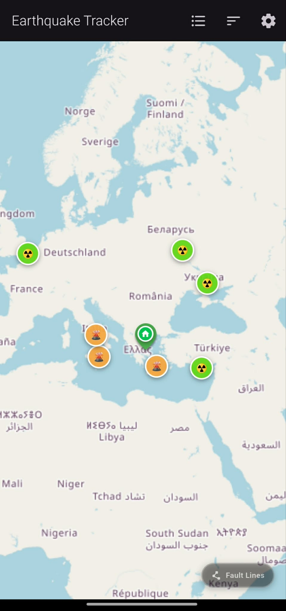
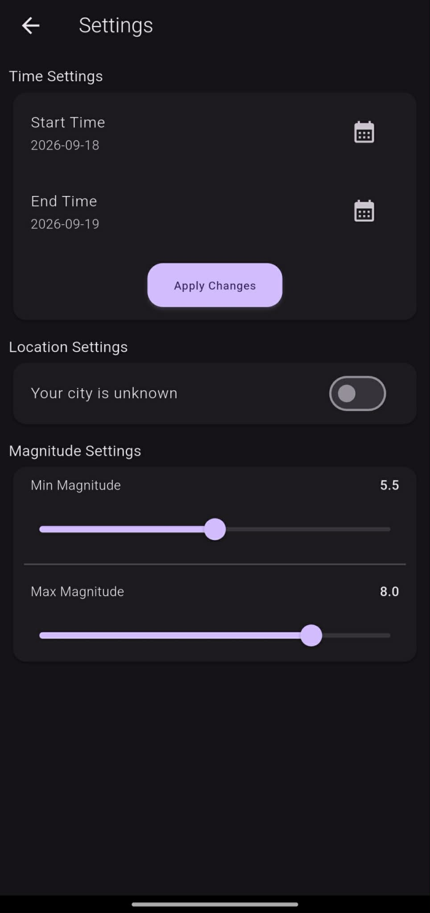
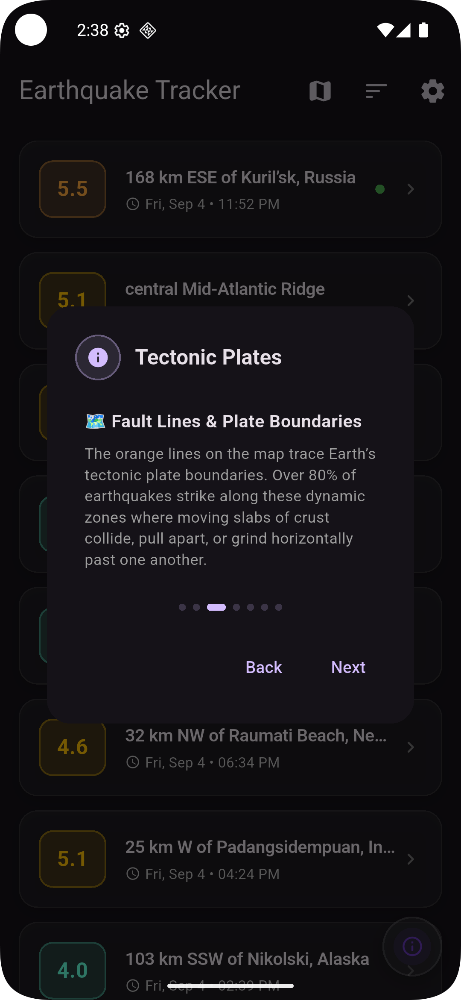
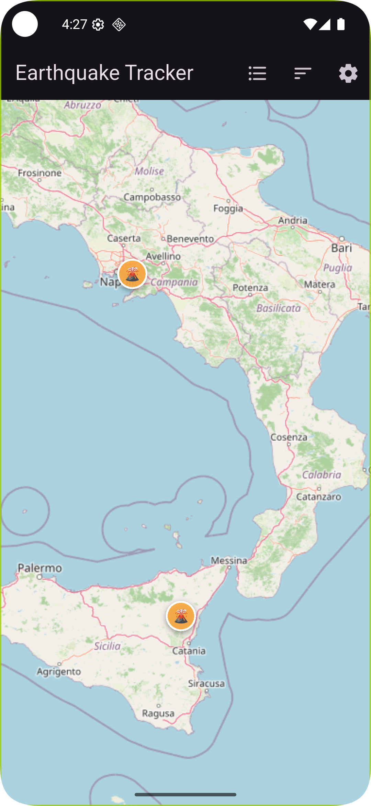
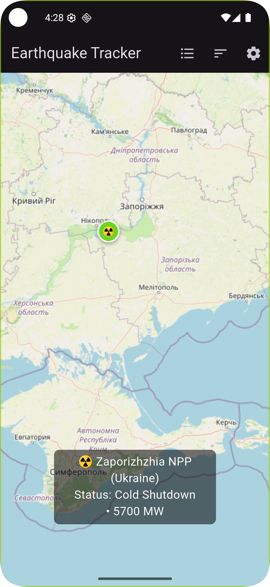

Key Features
🌍 Real-Time Data
Direct integration with the USGS global API to fetch recent seismic events accurate to the minute.
📍 Proximity Radius
Filter magnitude thresholds and seismic activity within a custom radius from your current location.
🔔 Instant Alerts
High-priority notifications and safety alarms triggered when high-magnitude quakes are detected nearby (planned for a future update).
🗺️ Live Seismic Radar
Switch seamlessly between list view and an interactive radar map with locked rotation, magnitude pins, and instant epicenter details.
Release History & Updates
Version 1.0.6 (Latest)
- Home Location Pin: Turn on your personal location to drop an intuitive Home Pin on the radar map and instantly measure your distance from any earthquake epicenter.
- Dual Magnitude Range Filter: Set both custom minimum and maximum magnitude boundaries to isolate and view only the seismic events you want to track.
- Tsunami Warning Hazard Markers: Integrated real-time hazard indicators alert you directly on the map when seismic events trigger active tsunami advisories.

📍 Personal Home Pin

🎚️ Dual Magnitude Range
Version 1.0.5

- Tectonic Plate Boundaries & Fault Lines: Trace Earth's major fault lines directly on the interactive map with a dedicated switch button to toggle them on or off anytime.
- Seismic Education & Insights: Explore dynamic tectonic plate mechanics and understand where over 80% of global earthquakes strike along converging and shifting plates.
- Hazards & Haptic Feedback: Includes active volcano overlays, nuclear power plant markers, and magnitude-scaled vibration feedback.
🗺️ Fault Lines Map Overlay

ℹ️ Tectonic Plates Guide

🌋 Volcano Overlays

☢️ Nuclear Power Plants